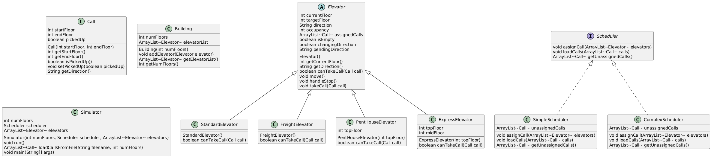

My name is Dakota Dragoo and I am currently pursuing a Computer Science degree at the University of San Diego (USD). I grew up in Colorado and now live in San Diego, I am a US Navy veteran and served 8 years with most of my time serving on a nuclear submarine. To learn more about me you can visit my LinkedIn Profile. LinkedIn Profile
As a student at USD most of the projects I am working on are student level and learning opportunities. I have completed an internship with the Department of Homeland Security, and will be joining the Naval Warefare Information Center for an internship in the summer of 2026. I really enjoy the cyber security world of computer science and would like to pursue a career in this field, I also have and interest in UX/UI.
I am a diehard sports fan and support all off the profesional teams in Colorado as well as Chelsea FC in London. Aside from watching sports I still love to get out and play them as well my favorite to do are soccer, basketball, and ju-jitsu.
Projects

Birthday Paradox
The birthday paradox says that the probability that two people in a room will have the same birthday is more than half, provided n, the number of people in the room, is more than 23. We are attempting to test the birthday paradox through a series of experiments and displaying the results.
Project design
- Randomly generates birthdays for a group of people which varies from 5 to 100 people.
- Checks if any two birthdays match inside the group.
- The experiment is repeated 20 times and an average is calculated.
- The results are then printed in side-by-side columns.
Implementation
For this project, I was responsible for implementing the Birthday and Month classes, which handled the core logic of generating and organizing birthdays. This included managing how months were indexed, determining the correct number of days in each month, and ensuring birthdays were generated accurately. I also focused heavily on clean code principles. I broke the program into small, readable methods with clear responsibilities, improved naming for clarity, and reduced duplication wherever possible. Writing and refining the structure of the code helped make the simulation easier to test and debug. This project helped me improve at turning a math concept into a working program and explaining it to a non-technical audience. I also got better at writing cleaner code, testing logic that involves randomness, and thinking about software as something you communicate to people, not just something that "runs."
Elevator Simulator
Have you ever wondered how elevator systems decide which elevator to send when you press the button? This project is a simulation of a real building elevator system that models how different types of elevators operate and how a scheduling system assigns calls to them. Built entirely in Java, this project challenged us to think deeply about software design, teamwork, and writing clean, testable code.
What does it do?
The simulator takes in a building configuration — the number of floors, the types and number of elevators, a scheduling strategy, and a file of elevator calls. It then runs the simulation round by round, with the scheduler assigning calls to elevators and each elevator moving one floor at a time toward its destination. The simulation supports four elevator types — Standard, Freight, PentHouse, and Express — each with their own rules for which calls they can accept. Two scheduling strategies are available: a Simple scheduler that assigns calls to the first available elevator from left to right, and a Complex scheduler that finds the closest available elevator to minimize wait time. The simulation ends when all calls have been answered and every elevator has returned to the ground floor, printing the state of the building each round.
Design
The project was designed around the four pillars of object-oriented programming and SOLID principles. We used abstraction and inheritance by creating an abstract Elevator class that defines shared state and behavior, with each elevator subclass implementing its own call acceptance policy — this is polymorphism in action. The Scheduler interface follows the Open/Closed Principle since new scheduling strategies can be added without modifying existing code, and the Dependency Inversion Principle since the Simulator depends on the Scheduler interface rather than any concrete implementation.
Implementation
My responsibilities on this project included implementing the Call class, the Building class, the SimpleScheduler, and the ComplexScheduler. I followed a strict test-driven development process for each class — writing a failing test first, implementing just enough code to make it pass, then committing and repeating. I used Mockito to mock Elevator objects in my scheduler tests, which allowed me to test my scheduling logic completely independently from my partner's elevator implementations. This was a valuable experience in writing decoupled, testable code. You can view the full project on GitHub here: GitHub Repository
What I Learned
This project significantly improved my understanding of object-oriented design and how the SOLID principles apply in practice rather than just in theory. Working through test-driven development showed me how writing tests first actually leads to cleaner, more focused code. I also got much more comfortable with Git workflows — branching, pull requests, and code reviews — which are skills I know I'll use in every future project.
Contact Me
email address